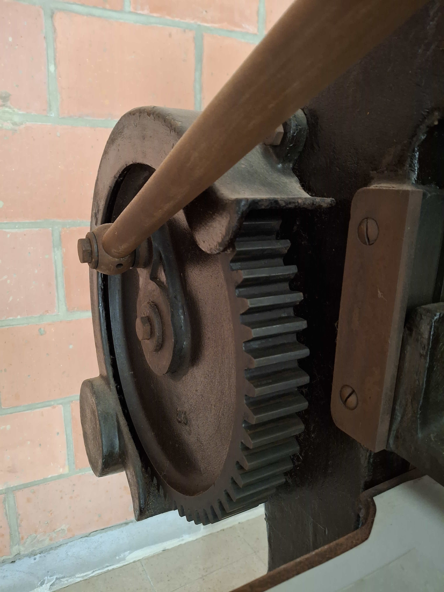
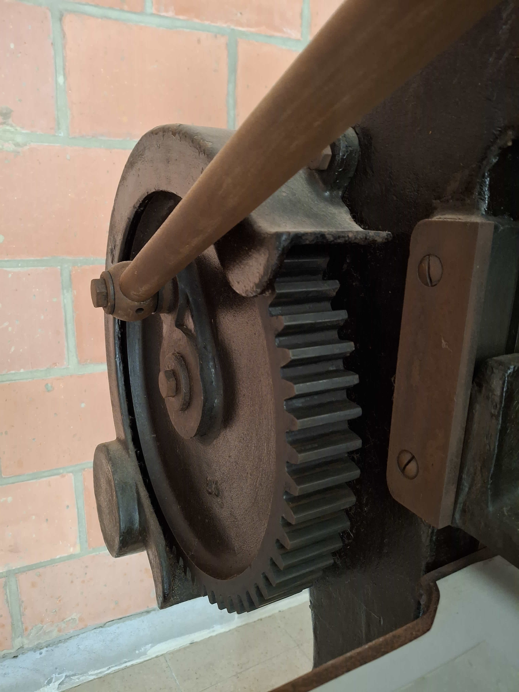

Massicot
Ce massicot est une machine professionnelle robuste, conçue pour la coupe précise de grandes quantités de papier. Son mécanisme manuel et sa construction en fonte lui confèrent une grande fiabilité, idéale pour les travaux de finition en imprimerie ou en atelier. Malgré son ancienneté, cet équipement est une pièce d'histoire fonctionnelle, prête à servir un nouvel utilisateur.
 

Pantographe
Cette machine est un **pantographe de gravure** fabriqué par **Hunter-Penrose Ltd**, une entreprise britannique historique spécialisée dans l'équipement pour les arts graphiques et la photogravure. Les plaques de la machine indiquent qu'elle a été fournie par **L. Geerts Matériel pour les Arts Graphiques**, un distributeur belge, ce qui confirme son marché de l'époque.
Ces machines étaient utilisées pour graver des dessins, des logos et des textes sur des plaques de métal à partir d'un modèle plus grand. L'état actuel montre l'usure du temps, mais elle reste une pièce d'équipement fascinante pour les collectionneurs ou pour ceux qui s'intéressent aux techniques d'impression traditionnelles.


Photograveuse
Cette photograveuse est un équipement lourd et fiable, conçu pour le processus d'insolation de plaques de gravure. Avec son système de tambour rotatif et ses commandes précises, elle est parfaite pour la création de plaques pour l'impression typographique ou la reproduction artistique. Elle est proposée pour enlèvement pour ceux qui souhaitent récupérer cette machine spécialisée.